#12239 Le Mans 66: Gegen jede Chance
Alternativ: Ford v Ferrari (Englischer Titel)


 IMDB-Wertung: 8.3 / 10
IMDB-Wertung: 8.3 / 10  IMDB-TOP-Platzierung: 130
IMDB-TOP-Platzierung: 130  Tomatometer: 92
Tomatometer: 92  Metascore: 81
Metascore: 81 
Der Motorsport ist schon in den 1950ern eine ganz eigene Welt, in der Ingenieure und Designer versuchen, sich mit ihren neuen Werken stets zu übertreffen. So werden auch Carroll Shelby und Ken Miles von Henry Ford II. angeheuert, um einen Rennwagen zu entwerfen, wie ihn die Welt noch nie zuvor gesehen hat - doch die Konkurrenz schläft nicht.
SCREENER sehr gute Quali!
Jahr: 2019
Dauer: 152 Minuten
FSK: 12
Land: USA Studio: Twentieth Century FoxTonspuren: DD2.0 - ,
Untertitel:
Auflösung: 1080p (1920x800) Größe: 7639 MB
Genre: Action, Drama, Sport, Biographie
Regisseur:  James Mangold
James Mangold
Drehbuch: Jez Butterworth, John-Henry Butterworth, Jason Keller
Soundtrack: Marco Beltrami, Buck Sanders
Darsteller:
- 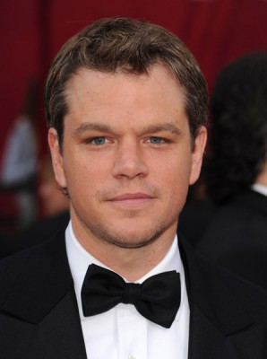 Matt Damon als Carroll Shelby
- 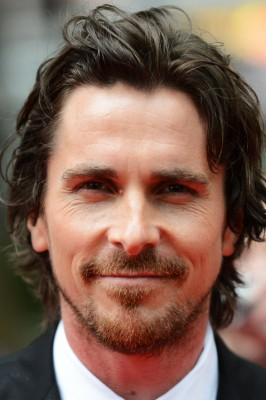 Christian Bale als Ken Miles
- 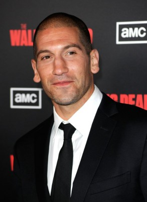 Jon Bernthal als Lee Iacocca
- Caitriona Balfe als Mollie Miles
- 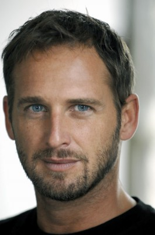 Josh Lucas als Leo Beebe
- Noah Jupe als Peter Miles
- Tracy Letts als Henry Ford II
- 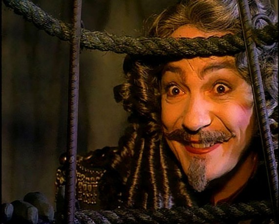 Remo Girone als Enzo Ferrari
 Ray McKinnon als Phil Remington
Ray McKinnon als Phil Remington- JJ Feild als Roy Lunn
- Jack McMullen als Charlie Agapiou
- Corrado Invernizzi als Franco Gozzi
- Joe Williamson als Don Frey
- Ian Harding als Ford Executive Ian
- 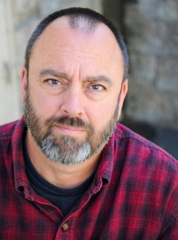 Christopher Darga als John Holman
- Shawn Law als Al 'Gus' Scussel
- Emil Beheshti als Aeronutronics Chief Engineer
- Darrin Prescott als Bob Bondurant
- Alex Gurney als Dan Gurney
- Benjamin Rigby als Bruce McLaren
- Ben Collins als Denny Hulme
- Francesco Bauco als Lorenzo Bandini
- Guido Cocomello als Ludo Scarfiotti
- Adam Mayfield als Lloyd Ruby
- Sean Carrigan als Walt Hansgen
- Lachlan Buchanan als Celebrity MC - Cloverfield
- Giles Matthey als Lance Reventlow
- 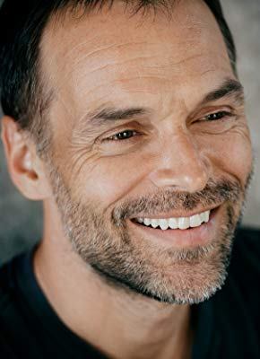 Rudolf Martin als Dieter Voss
- Evan Arnold als SCCA Official
- 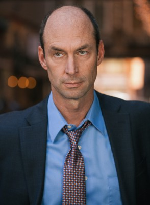 Darin Cooper als Reporter - Sam
- 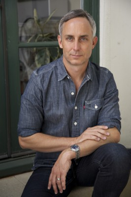 Wallace Langham als Dr. Granger
- Jonathan LaPaglia als Pit Engineer - Eddie
- Brad Beyer als Wayne - Customer
- Ottavio Taddei als Italian Photographer
- Giovanni Cirfiera als Gianni Agnelli
- Wyatt Nash als Cool Young Buyer
- Drew Rausch als Pilot Private Plane
- Ward Horton als Test Driver - Burt
- Michael Lanahan als Brumos Executive
- Tanner Foust als Ronnie Bucknum
- 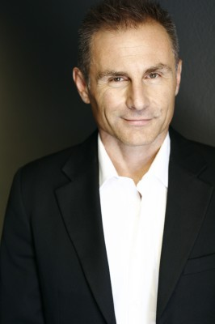 Peter Arpesella als Ferrari Pit Chief
- Andrew Burlinson als Ford Executive #2
 Lou Beatty Jr. als Janitor
Lou Beatty Jr. als Janitor- Marc Forget als Le Mans Official #1
- Stephane Fiorenza als Le Mans Official #2
- Joss Glennie-Smith als Mechanic Ford Advanced Vehicles
- Tim Banning als Reporter - Daytona
- Arron Shiver als Charlie Brockman ABC
- 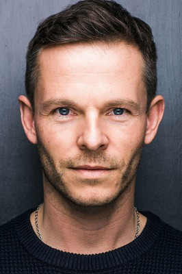 Paul Fox als British Commentator
- Zack Zublena als French Commentator
Datei: X:\2019(G-M)\Le Mans 66 Gegen jede Chance (2019, FSK12, 1920x800).mkv seit 31.12.2019
Festplatte: HD 2018(G-Z)-2019(A-Z)
 Es gibt insgesamt 47 Filme in der Gruppe '2019(G-M)'
Es gibt insgesamt 47 Filme in der Gruppe '2019(G-M)'